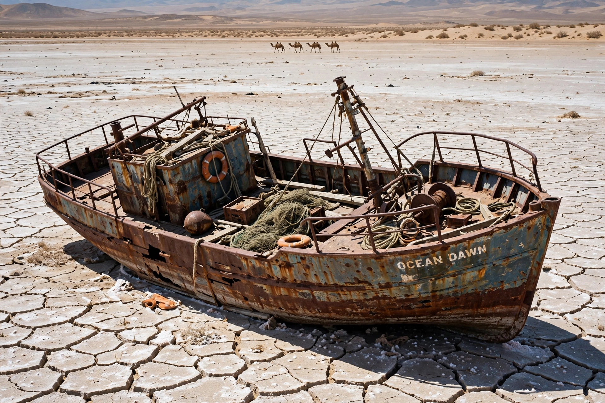

[Image placeholder: A rusting ship stranded on the dried bed of the Aral Sea near Muynak]The **Aral Sea** was an endorheic lake lying between Kazakhstan to its north and Uzbekistan to its south. In 1960 it was the world's fourth-largest lake, covering about 68,000 km². Soviet irrigation projects then diverted its two feeder rivers, the Amu Darya and Syr Darya, mainly for cotton, and the sea began to shrink dramatically — one of the worst human-made environmental disasters of the twentieth century.
By the 2000s the Aral had split into the smaller North Aral Sea (in Kazakhstan) and the largely desiccated South Aral remnants; fishing ports such as Muynak were left stranded tens of kilometres from water, and salt- and pesticide-laden dust from the exposed bed damaged health across the region. The Kokaral dam, completed with World Bank support in 2005, has partially revived the North Aral: its level rose, salinity fell, and fish and fishing have partly returned.
From the 1960s the USSR expanded irrigated cotton acreage massively; canal losses were enormous (the Karakum Canal alone diverts much of the Amu Darya to Turkmenistan). Inflow fell from about 56 km³ a year to near zero in some years.
The fishery collapsed, the regional climate became more continental, and respiratory disease rose. The eastern basin dried completely in 2014 for the first time in modern history. Kazakhstan's northern recovery is held up as proof that partial restoration is possible with damming and river management, while the Uzbek south remains mostly salt desert, now planted with saxaul shrubs to fix the dust.